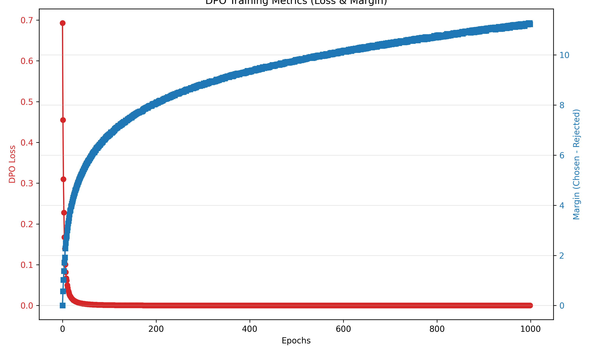

Chosen / prefer this
A visual notebook / 01
microDPO
Two answers. One preference.
A tiny model learns the difference.
Direct Preference Optimization
5 pairs · 1 tiny GPT · no reward model
5 pairs · 1 tiny GPT · no reward model
01
Start with a preference.
Rejected / prefer less
Inside the 64-token sequence
Gray = prompt. Yellow = separator. Green = response. Dashed = padding. The first character has no prediction target; padding targets are masked. This implementation scores prompt and separator targets too, not just the response.
02
Turn preference into a loss.
Illustrative sequence log probabilities
Chosen answer Higher score = more likelyRejected answer Log probability ≤ 0
Chosen reward
Rejected reward
Chosen reward − rejected reward
margin =Loss = −log sigmoid(margin)
DPO preference probability
sigmoid(margin), not a generation probability
01 / Compare to the starting point
Each reward is β × (policy score − reference score). The reference is a fixed copy of the initial model.
02 / Find the relative improvement
The chosen reward should beat the rejected reward. Both scores can fall while their margin improves.
03 / Make the loss smaller
A larger positive margin gives a smaller loss. Gradients update the policy only; no separate reward model is trained.
These controls are a one-pair math sandbox, not inference from the saved checkpoint. Reference sliders define a different hypothetical baseline; real training leaves that baseline unchanged. β scales the margin here, not the optimizer learning rate.
03
Recorded training / not a simulationWatch the preference separate.
Epoch
DPO loss ↓
Reward margin ↑
Loss
Reward marginChosen − rejected
Loss falls as the reference-relative margin grows. These are training metrics on five pairs, not evidence of generalization or reliable language generation. Values are averages of batch means, so loss need not equal −log sigmoid of the displayed mean margin.
Original training plot

04
One small transformer underneath.
CharactersPrompt + SEP + response
Embeddings32 dimensions + position
3 GPT blocks4 causal heads per block
Next-token logitsLayer norm + linear head
Sequence scoreSum of target log probs
Each GPT block uses pre-layer normalization, masked self-attention, a 32 → 128 → 32 ReLU feed-forward network, and residual connections. Causal masking hides future characters.
The policy starts from random weights. A deep copy becomes the reference. AdamW updates the policy with learning rate 0.001, batch size 2, and β = 0.1 for 1,000 epochs.
Check your intuition
Both policy scores improve by the same amount. The reference stays fixed. What happens to the DPO loss?